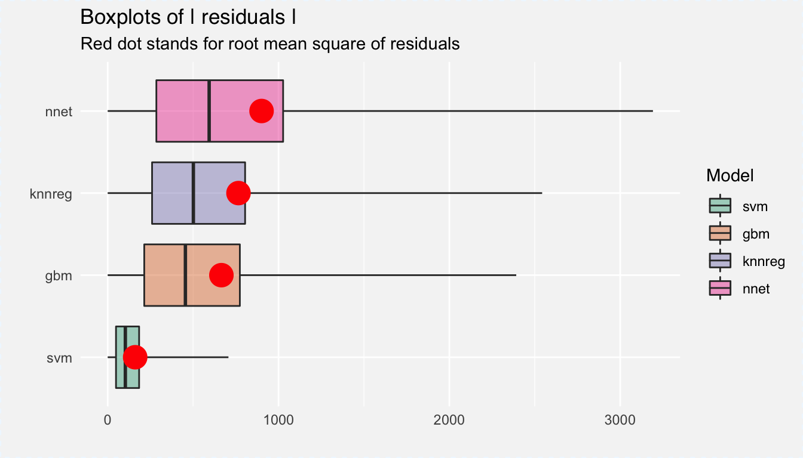

Examples in previous chapters were based on random forest model and linear model.
But there are so many different approaches for regression modeling.
Try gbm (Generalized Boosted Regression Models), knn (k-Nearest Neighbour), svm (Support Vector Machines), nnet (Neural Networks) or other models.
construction.year,Below you will find fits for few different models. Try them out.
library("DALEX")
library("gbm")
apartments_gbm_model <- gbm(m2.price ~ construction.year + surface + floor +
no.rooms + district, data = apartments, n.trees = 1000)## Distribution not specified, assuming gaussian ...explainer_gbm <- explain(apartments_gbm_model,
data = apartmentsTest[,2:6], y = apartmentsTest$m2.price,
predict_function = function(m, d) predict(m, d, n.trees = 1000))
library("nnet")
apartments_nnet_model <- nnet(m2.price ~ construction.year + surface + floor +
no.rooms + district, data = apartments,
linout=TRUE,
size = 50, maxit=100)## # weights: 751
## initial value 12985401158.936506
## final value 821267660.638998
## convergedexplainer_nnet <- explain(apartments_nnet_model,
data = apartmentsTest[,2:6], y = apartmentsTest$m2.price)
library("e1071")
apartments_svm_model <- svm(m2.price ~ construction.year + surface + floor +
no.rooms + district, data = apartments)
explainer_svm <- explain(apartments_svm_model,
data = apartmentsTest[,2:6], y = apartmentsTest$m2.price)
library("caret")
mapartments <- model.matrix(m2.price ~ ., data = apartments)
mapartmentsTest <- model.matrix(m2.price ~ ., data = apartmentsTest)
apartments_knn_model <- knnreg(mapartments, apartments[,1], k = 5)
explainer_knn <- explain(apartments_knn_model,
data = mapartmentsTest, y = apartmentsTest$m2.price)
# Model performance
mp_knn <- model_performance(explainer_knn)
mp_svm <- model_performance(explainer_svm)
mp_gbm <- model_performance(explainer_gbm)
mp_nnet <- model_performance(explainer_nnet)
plot(mp_gbm, mp_nnet, mp_svm, mp_knn, geom = "boxplot")Figure 7.1: Distribution of residuals for fourn new models
